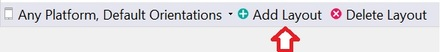
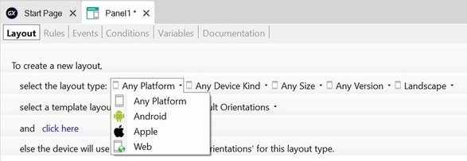
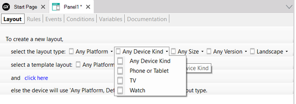
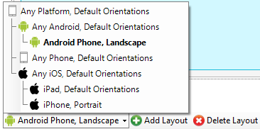
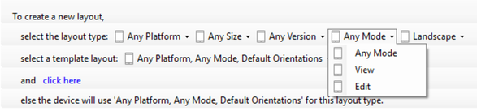

In different devices and even in the same device you may want to use different designs. For example:
Generators: Android, Angular, Apple.
GeneXus allows having more than one design per Panel. For this, it allows designing in each Panel different layouts that vary by Platform; that is, varying by Operating System (OS), Device Kind, size, OS version, and orientation. When creating a Panel object, a default layout is created to be used for Any Platform, Any Size, Any Version, and Any Orientation.

By pressing the "Add Layout" button, you can create new designs.


As you can see in the above images, the select the layout type option allows you to choose the platform, the device kind, etc. so that you can define the layout design for that combination.
Also, you can use the select a template layout option to initialize the new layout design with the design of a previously created layout.
When pressing the click here link, the new layout design will be created with the selected type / based on the selected template.
Then, in the bottom left corner of the Panel Layout section, you can select each layout to design it.

In the Work With Devices Detail Layout, in addition to the platform, size and orientation, you can also define different layouts designs depending on the Mode (View and Edit):

Native Mobile Applications Events
KB Platforms